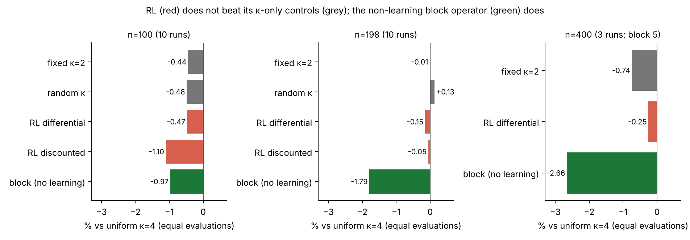
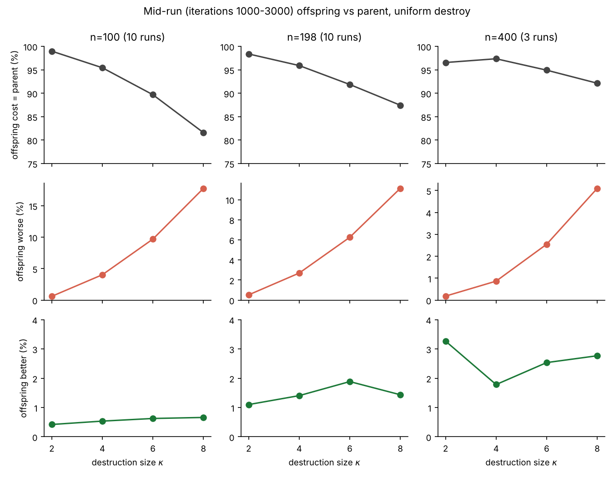
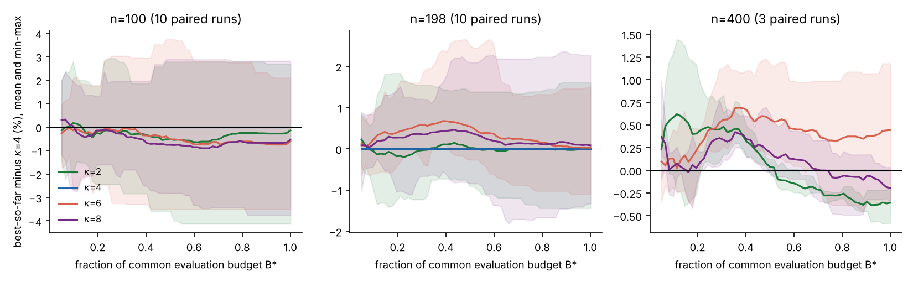
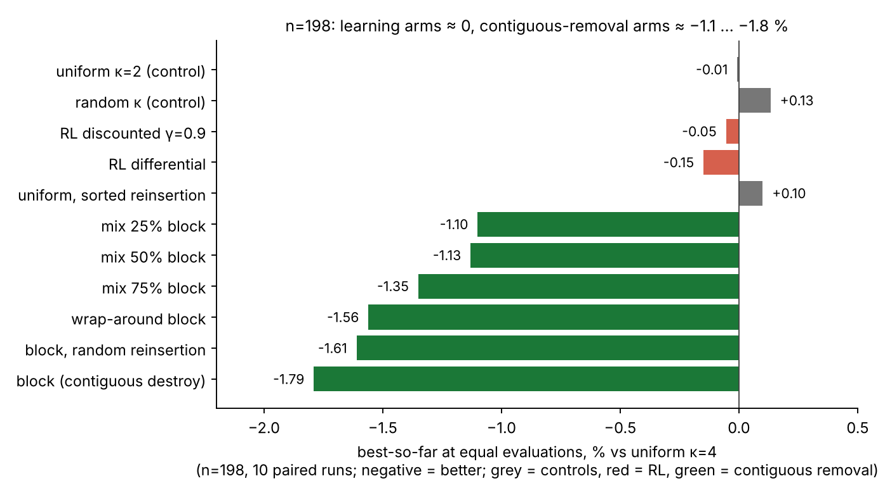
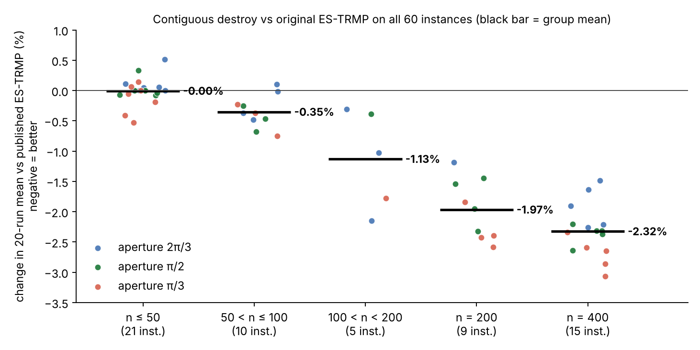

| Instances (60 total) | Count | Mean change vs published ES-TRMP | Instances improved / tied / worse |
|---|---|---|---|
| n ≤ 50 | 21 | 0.00 % | 7 / 7 / 7 (no headroom) |
| 50 < n ≤ 100 | 10 | −0.35 % | 9 / 0 / 1 |
| 100 < n < 200 | 5 | −1.13 % | 5 / 0 / 0 |
| n = 200 | 9 | −1.97 % | 9 / 0 / 0 |
| n = 400 | 15 | −2.32 % | 15 / 0 / 0 |
| n ≥ 198 (headline) | 26 | −2.17 % | 26 / 0 / 0 (Wilcoxon p < 0.0001) |
Directional sensors can see only an angular sector. Groups of sensors are activated one after another, and moving from one group to the next requires every newly-active sensor to rotate. Rotation costs energy, so TRMP asks for the order of groups that minimises total rotation. The cost of a group depends on several earlier groups (a sensor keeps its last direction until a later group uses it), so costs cannot be tabulated and TRMP is NP-hard.
ES-TRMP (the base paper) is a (1+1) evolution strategy on permutations with three components: (1) a pre-processing step (NEH insertion heuristic on 20 random solutions and their “opposites”); (2) a destroy-and-repair mutation: remove κ=4 groups chosen uniformly at random, then re-insert them one by one at their cheapest position; elitist acceptance; (3) a shuffle (the same operator with a much larger destruction size δ) after η=100 iterations without improvement. Protocol: 4,000 iterations, 20 independent runs, 60 instances (m = 50, 100, 200, 400 sensors; apertures 2π/3, π/2, π/3). It beat the previous best method (GA-TRMP+LSB) on every instance but was 3–5× slower.
The brief observed that the repair step is intelligent (greedy, problem-aware) but the destroy step is blind: uniform random choice and a constant κ fixed before the run. It proposed to replace only that step by a learned controller, keeping everything else identical so that any difference is attributable to the controller: differential Q-learning (average-reward; Q and the reward-rate estimate updated by δ = r − R̄·τ + max Q′ − Q), a small state (stagnation, budget progress, recent success rate, …), actions κ ∈ {2,4,6,8} (stage R1), then κ × selection policy (uniform, cost-greedy, history-aware, block; stage R2) and finally a learned shuffle (R3). The reward was the relative cost reduction of the offspring, and fairness was to be enforced by measuring everything in objective evaluations.
| Change / step | What it is | Outcome |
|---|---|---|
| Reproduce ES-TRMP | Rebuilt the original C code and re-ran it; compared with the repository’s reference table. | Identical best / mean / SD / best-iteration statistics on all 31 instances with n ≤ 100, on n=198 and on an n=400 instance (4349.337 / 4373.350 / 17.225). |
| Instrumented driver | Baseline functions lifted unchanged into src/; added an evaluation counter (one count per candidate position tried in repair), a destroy-policy switch, and logging that never touches the random-number stream. | Bit-identical to the original (tests on n=18, 25, 198 and n=400). |
| Diagnostic of κ | Fixed κ ∈ {2,4,6,8} with logging of parent vs offspring cost; decision rules written before looking at results. | κ barely matters; 92–98 % of offspring tie the parent’s cost (Section 4.3). |
| RL learner (stage R1) | Tabular differential and discounted Q-learning over κ, strict equal-budget accounting, own random generator, unit tests on toy MDPs. | Equals constant-κ controls (Section 4). |
| New destroy policies | cost-greedy, history-aware, block (contiguous), plus control variants (random reinsertion order, wrap-around, sorted reinsertion, mixes). | block works; the others do not (Section 5). |
| Full-protocol validation | block, κ=4, 4,000 iterations, 20 runs, all 60 instances, compared with the reference table. | 26/26 improved at n ≥ 198 (Section 6). |
| Same-session paired check | Re-ran the original ES-TRMP in the same session on 10 instances and paired it with block run by run (identical seeds, identical pre-processed start). | Same-session baseline equals the reference mean on 10/10 instances; block better in 157/160 runs at n ≥ 198. |
Everything in the destroy-and-repair loop other than which groups are removed is unchanged: pre-processing, greedy repair, acceptance rule, shuffle trigger and size, 4,000 iterations. Findings about the original code that mattered: its command-line seed argument is dead (every run uses seeds 1…20), it accepts equal-cost offspring, shuffle size is ⌊n/7⌋ (the brief says ⌈n/7⌉), and its total evaluation count varies per run because shuffles are more expensive than normal mutations.
Learner. State: stagnation u (4 bins) × budget progress β (4 bins) = 16 states. Actions: κ ∈ {2, 4, 6, 8}, uniform destroy. Update: δ = r − R̄·τ + max Q(s′,·) − Q(s,a), Q += αδ, R̄ += ηRL·α·δ with α=0.1, ηRL=0.2, ε-greedy annealed 0.30→0.02. Reward: relative cost reduction of the offspring before acceptance, signed-log compressed (constant calibrated on a different instance). τ = evaluations consumed by the action. A discounted twin (γ=0.9) shared everything else. Acceptance, repair, shuffle and pre-processing were the baseline’s; the run stopped on the same evaluation budget the baseline used in the same run (observed parity within 0.098 %).
Controls run through the identical loop: fixed κ=2 and random κ. If the learner were useful it would have to beat these, not just the paper’s fixed κ=4.
Protocol (reduced, as agreed). n=100 and n=198: 10 paired runs; n=400: 3 runs. Paired by run index, compared at equal evaluation counts.
| Instance (runs) | Method | vs uniform κ=4 | p (vs κ=4) | RL vs the κ-only controls |
|---|---|---|---|---|
| n=100 (10) | fixed κ=2 (control) | −0.44 % | 0.63 | |
| random κ (control) | −0.49 % | 0.63 | ||
| RL differential | −0.47 % | 0.63 | vs fixed κ=2: −0.03 % (p=0.56) → no gain | |
| RL discounted γ=0.9 | −1.10 % | 0.027 | vs fixed κ=2: −0.66 % (p=0.19); vs random κ: −0.62 % (p=0.084) → not established | |
| block (no learning) | −0.97 % | 0.084 | ||
| n=198 (10) | fixed κ=2 (control) | −0.01 % | 0.92 | |
| random κ (control) | +0.13 % | 0.63 | ||
| RL differential | −0.15 % | 0.13 | vs fixed κ=2: −0.14 % (p=0.63) → no gain | |
| RL discounted γ=0.9 | −0.05 % | 0.63 | vs fixed κ=2: −0.05 % (p=0.85) → no gain | |
| block (no learning) | −1.79 % | 0.002 | ||
| n=400 (3; block 5) | fixed κ=2 (control) | −0.74 % | 0.25 (min.) | |
| RL differential | −0.25 % | 0.75 | vs fixed κ=2: +0.49 % (worse) | |
| block (no learning) | −2.66 % | 0.0625 (min., 5/5) |



Answer: not from RL. The following attribution table collects every candidate source of gain, measured at equal evaluations against the paper’s uniform κ=4 (paired runs).
| Candidate source | Measured effect | Verdict |
|---|---|---|
| Choosing a different κ (fixed κ=2…12, uniform destroy) | n=198: all within 0.08 %; n=400 (10 runs): κ=2 vs 4 +0.05 %, p=0.77 | No effect |
| Learning κ (RL differential) | vs fixed κ=2: −0.14 % (n=198, p=0.63), −0.03 % (n=100, p=0.56), +0.49 % worse (n=400, 3 runs) | No measurable gain |
| Learning κ (RL discounted) | vs controls at n=100: −0.62 … −0.66 % (p=0.084 / 0.19); n=198: ≈−0.05 % | Not established |
| Reinsertion order in the repair | uniform with sorted reinsertion +0.10 %; block with random vs sorted order −0.18 % (p=0.32) | No effect |
Removing the costliest groups (cost-greedy) | no gain at any size | No effect |
| History-aware removal (the brief’s novelty claim) | no effect at n ≤ 198; −0.29 % at n=400 (5 runs, p=0.0625), worse early in the run | Unproven |
| Removing a contiguous run of adjacent groups | n=198: −1.79 % (10/10 runs, p=0.002); n=400: −2.66 % (5/5 runs); random-order and wrap-around variants −1.6 % | The source of the gain |

Setup identical to the paper except the destroy step: 4,000 iterations, 20 runs (seeds 1…20), κ=4, uniform shuffle, same pre-processing, repair and acceptance, all 60 instances. Baseline = the published/reference ES-TRMP rows (exactly reproduced by our rebuild).

| Aperture φ (n ≥ 198) | Instances | Mean change | Improved | Wilcoxon p |
|---|---|---|---|---|
| 2π/3 | 7 | −1.83 % | 7/7 | 0.0156 |
| π/2 | 9 | −2.12 % | 9/9 | 0.0039 |
| π/3 (hardest) | 10 | −2.45 % | 10/10 | 0.0020 |
| Instance | GA-TRMP+LSB mean (paper) | ES-TRMP mean (paper) | With contiguous destroy | Change vs ES-TRMP |
|---|---|---|---|---|
| dirn200m120r150s06i00 (n=198) | 2311.846 | 2224.518 | 2184.983 | −1.78 % |
| dirn400m240r150s06i00 (n=400) | 4594.853 | 4373.350 | 4270.926 | −2.34 % |
| dirn400m240r150s06i01 (n=400) | 4015.341 | 3801.517 | 3692.783 | −2.86 % |
| dirn400m240r150s06i02 (n=400, largest gain) | 4146.541 | 3920.388 | 3800.164 | −3.07 % |
| Group | Instances | Mean change | 95 % CI | Runs where block is better |
|---|---|---|---|---|
| n ≈ 100 | 2 | −0.60 % | [−1.06, −0.21] | 28 / 40 |
| n ≈ 200 (198–200) | 4 | −1.92 % | [−2.39, −1.39] | 77 / 80 |
| n = 400 | 4 | −2.44 % | [−2.74, −2.20] | 80 / 80 |
| n ≥ 198 | 8 | −2.18 % | [−2.50, −1.81] | 157 / 160 |
The re-run original algorithm reproduced the reference mean on 10 of 10 instances, so the comparison baseline is the genuine ES-TRMP. Effect sizes are large (paired |dz| between 1.3 and 4.9 at n ≥ 198), i.e. many standard errors from seed noise. At n≈100 the per-instance p-values (≈0.04–0.05) do not survive Holm correction (0.08): treat that size as suggestive.
The operator changes no repair work: candidate evaluations per mutation are identical (e.g. 6.57 M vs 6.53 M per n=400 run) and CPU time per run is within ±15 % of the original (n≈200: 45 s original vs 39 s; n=400: 238 s vs 254 s, measured with parallel jobs sharing the machine, so approximate). The full 60-instance × 20-run study took 22.1 CPU-hours.
| Item | Why | |
|---|---|---|
| ADOPTED | Contiguous (block) destroy, κ=4 | Only change with a robust, large, size-dependent gain (26/26 instances at n ≥ 198); no extra evaluations; controls show contiguity is the cause. |
| ADOPTED | Equal-evaluation budget accounting, paired seeds | Prevents an action that merely spends more compute from looking better; pairing removes start-point variance. |
| ADOPTED | Pre-registered decision rules and control arms | Stops results from being fitted after the fact; exposed that κ-learning has no headroom. |
| ADOPTED | Instrumented driver, exact-reproduction and equivalence tests | Every number is traceable to code that matches the original bit for bit. |
| ADOPTED | Paper’s protocol for the headline, same-session baseline for paired confirmation | Comparable to the published table, plus a design that does not depend on published numbers. |
| DROPPED | Learning κ (differential and discounted Q-learning) | κ has no headroom; the learner equals constant-κ controls and is worse than fixed κ=2 at n=400. |
| DROPPED | cost-greedy destroy | No gain at any size; block removes cheaper groups than uniform yet wins, so cost is not the mechanism. |
| DROPPED | history-aware destroy (brief’s novelty claim) | No effect at n ≤ 198; −0.29 % at n=400 on 5 runs (p=0.0625) and worse early — unproven. |
| DROPPED | Mixing uniform and block per mutation | Pure block beats every mix (clear dose-response). |
| DROPPED | Learner over operators (R2) and learned shuffle (R3) | No state-dependent preference resolvable at n ≤ 198; not built. |
| DROPPED | τ in raw evaluations; “differential beats discounted” as a claim | Raw τ diverged to NaN; the discounted/differential difference is not supported against the controls. |
| DROPPED | GA-TRMP+LSB re-run | Skipped on instruction; paper values quoted only for context. |
| CORRECTED | “Most budget is wasted on no-ops”; “κ=2 beats κ=4 at n=400” | True no-ops are only ≈4–16 % of the budget (most ties are plateau moves); the κ=2 gain on 3 runs was noise (10 runs: +0.05 %, p=0.77). |
| # | Evidence in hand | Decision |
|---|---|---|
| 1 | Brief + base paper read; design says only the destroy step is replaced. | Keep everything else bit-identical; make equal-evaluation accounting the fairness rule. |
| 2 | Rebuild reproduces published rows exactly (32/32 plus n=400). | Trust the code base; use published rows as the baseline. |
| 3 | κ diagnostic: 92–98 % ties, κ irrelevant at equal budget. | Stop treating κ as the lever; keep the diagnostic method. |
| 4 | Three parallel experiments: more κ runs + destroy policies; RL learner; write-up of the κ result. | κ result confirmed negative; block found promising; RL learner ≈ constant κ=2. |
| 5 | Validation on 3 instances per size across apertures; κ sweep; mechanism and mix controls. | Adopt block (gain at n ≳ 200, not at n≈100); κ=4 kept; mixes dropped; contiguity is the mechanism. |
| 6 | Full protocol on all 60 instances: 26/26 improved at n ≥ 198. | Make this the headline result. |
| 7 | Same-session baseline: reference reproduced 10/10; 157/160 paired runs better. | Confirm the claim with the strongest paired design; report variance honestly (not reduced). |
Repository: Differential_RL_TRMP/ (branch master). Full report with all tables: docs/FINAL_REPORT.md; decision log: docs/DECISION.md; RL experiment: docs/OPTION_B_RESULTS.md; block validation: docs/TEST12_RESULTS.md; mechanism and mixes: docs/TEST34_RESULTS.md; raw numbers: docs/data_full_protocol.txt, docs/data_paired.txt.
make out/es_drl → bash tests/test_equiv.sh (driver ≡ original) → scripts/full_block.sh 4 (60 instances × 20 runs) → .venv/bin/python scripts/compare_full.py (Section 6 tables). The learner’s driver integration lives on branch option-b-r1 (not merged because it overlaps with the destroy-policy edits).